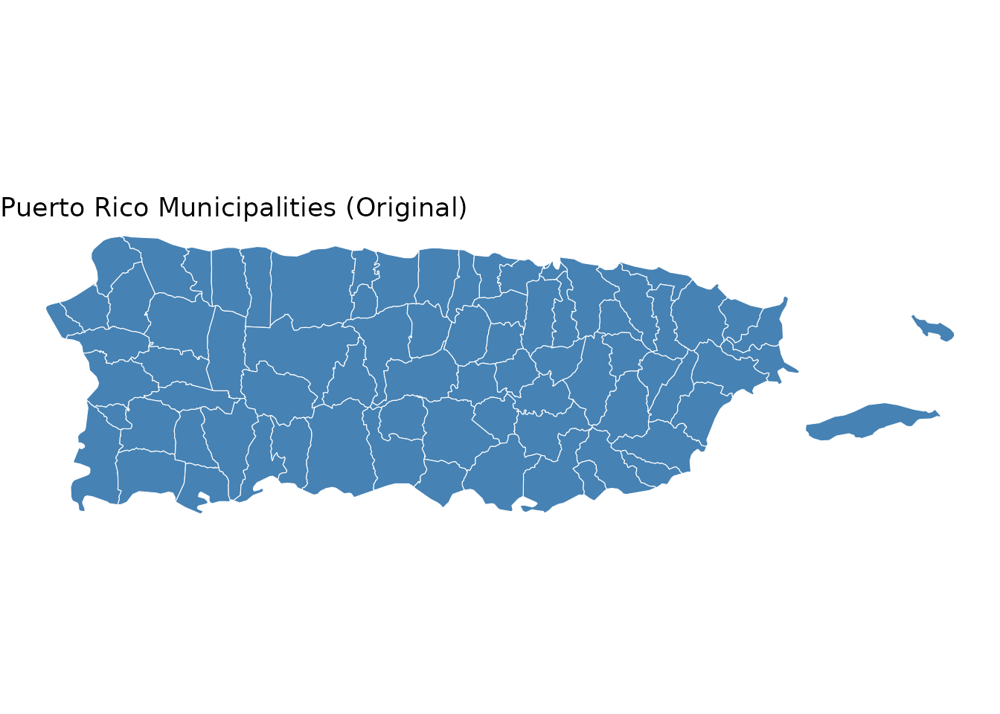
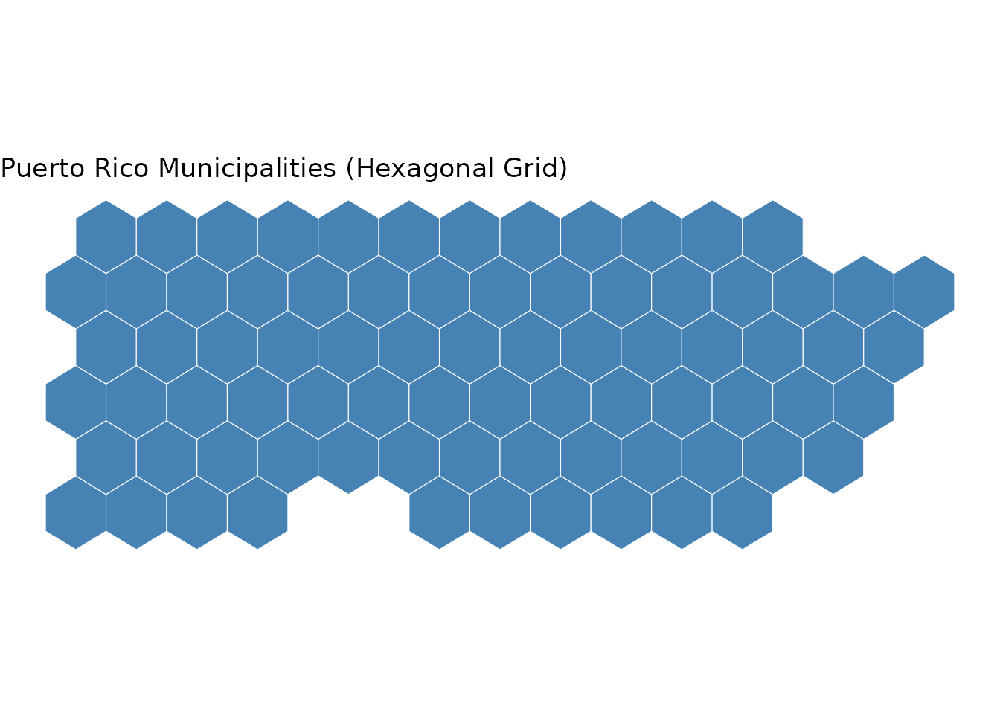
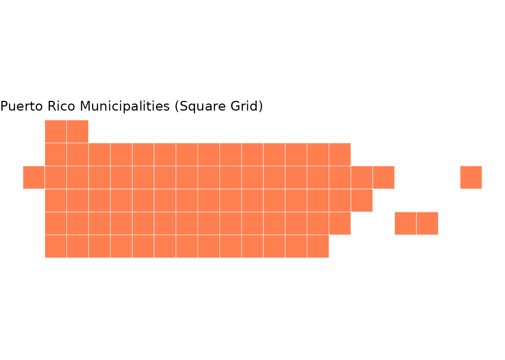
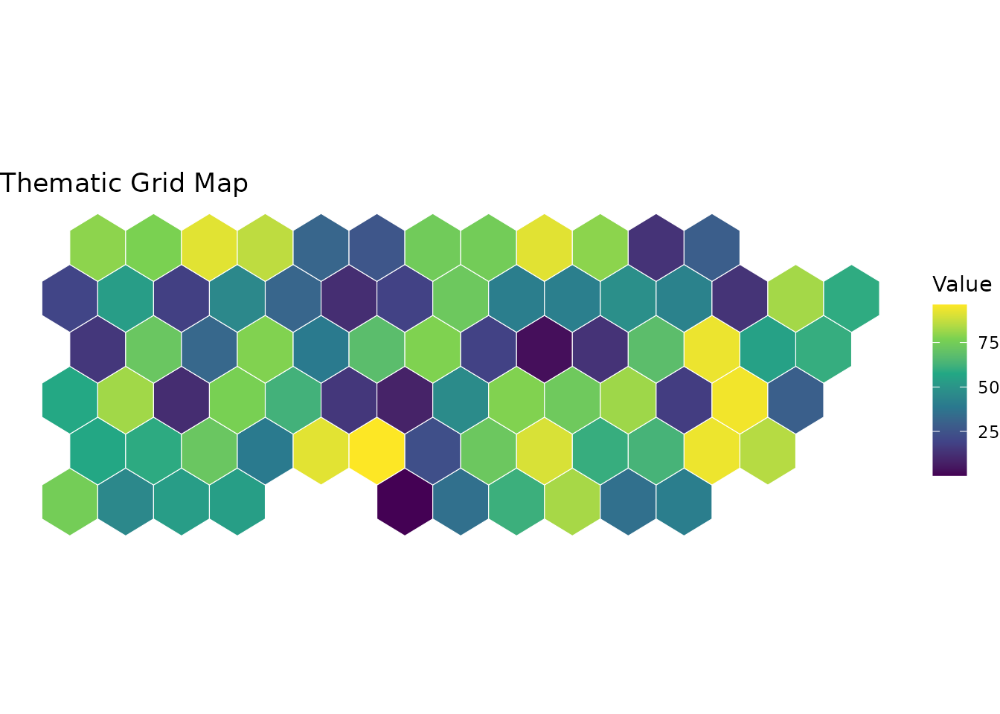

Introduction
The tidymapgrid package provides a simple interface for
converting geographic polygons into grid representations. This is
particularly useful for creating tile grid maps (also
known as grid cartograms) where each geographic unit is represented by a
uniformly-sized cell.
Why use grid maps?
Traditional geographic maps can be misleading because:
- Large areas dominate visually even when they’re not important for the data
- Small areas are hard to see even when they contain important information
- Irregular shapes make it difficult to compare values across regions
Grid maps solve these problems by representing each geographic unit with an equal-sized cell, making comparisons fair and easy.
Installation
You can install tidymapgrid from GitHub:
devtools::install_github("ian-flores/tidymapgrid")Basic Usage
Loading geographic data
First, load your geographic data as an sf object. For
this example, we’ll use a sample dataset of Puerto Rico municipalities
that comes bundled with the package:
# Load sample data bundled with the package
pueblos <- readRDS(system.file("extdata", "pueblos.RDS", package = "tidymapgrid"))
# View original map
ggplot(pueblos) +
geom_sf(fill = "steelblue", color = "white") +
theme_void() +
labs(title = "Puerto Rico Municipalities (Original)")
Creating a hexagonal grid
The get_grid() function converts your polygons to a
grid:
# Create hexagonal grid
hex_grid <- get_grid(pueblos, type = "hexagonal", seed = 42)
ggplot(hex_grid) +
geom_sf(fill = "steelblue", color = "white") +
theme_void() +
labs(title = "Puerto Rico Municipalities (Hexagonal Grid)")
Creating a square grid
You can also create square grids:
# Create square grid
square_grid <- get_grid(pueblos, type = "square", seed = 42)
ggplot(square_grid) +
geom_sf(fill = "coral", color = "white") +
theme_void() +
labs(title = "Puerto Rico Municipalities (Square Grid)")
Working with Data
The grid retains all attributes from the original data, making it easy to create thematic maps:
# Add some example data
hex_grid$value <- runif(nrow(hex_grid), 0, 100)
ggplot(hex_grid) +
geom_sf(aes(fill = value), color = "white") +
scale_fill_viridis_c() +
theme_void() +
labs(
title = "Thematic Grid Map",
fill = "Value"
)
Reproducibility
The seed parameter ensures reproducibility. The same
seed will always produce the same grid layout:
grid1 <- get_grid(pueblos, type = "hexagonal", seed = 123)
#> old-style crs object detected; please recreate object with a recent sf::st_crs()
#> old-style crs object detected; please recreate object with a recent sf::st_crs()
grid2 <- get_grid(pueblos, type = "hexagonal", seed = 123)
#> old-style crs object detected; please recreate object with a recent sf::st_crs()
#> old-style crs object detected; please recreate object with a recent sf::st_crs()
# These are identical
identical(grid1, grid2)
#> [1] TRUEDifferent seeds produce different arrangements, so you can experiment to find the most pleasing layout for your data.
Tips and Best Practices
Experiment with seeds: Try different seed values to find a layout that best preserves the geographic relationships in your data.
-
Choose the right grid type:
- Hexagonal grids look more organic and are often preferred for statistical visualization
- Square grids are simpler and may work better for certain applications
Consider your data: Grid maps work best when comparing values across regions. If the actual geography is important, a traditional map may be more appropriate.